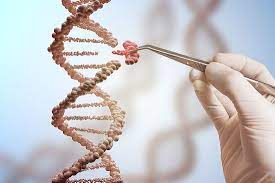

Introducción
El mundo de la genética es una que siempre está cambiando y muy complejo. Con todos esos cambios e ideas nuevos en este ámbito surge muchas preguntas de la controversia y también la maravillas cosas que vamos hacer en el futuro con toda la tecnología que tenemos. Para ayudar a responder a todos nuestras preguntas hemos recurrimos a los expertos para comprender uno de los temas más interesantes del mundo.
*Parte 1*
Para empezar, la ADN es los bloques de construcción de toda la vida en el mundo y en los últimos años hemos aprendido y descubierto muchas cosas nuevas sobre ese tema muy complejo. También hemos avanzado nuestra tecnología en este ámbito, como el CRISPR Cas9, una manera para cortar y editar la ADN. Con todo el bien también viene el mal, por ejemplo, desafíos éticos entre científicos. ¿Como sabemos que es correcto para cosas como la modificación genética? Dra. Diana Valverde Perez, quien asiste a la Universidad de Santiago de Compostela en España, dice que “Cuando hablamos de modificación genética en general no parece ético. La manipulación de los seres humanos a mi modo de ver no es ética.” Con eso podemos ver que, desde un punto de vista de una experta genética, en general la modificación genética no es ética, pero Dra. Valverde además dice que “Si la modificación genética fuese de manera puntual, arreglar una mutación en un gen que causa enfermedad o bloquear un gen que está haciendo daño, creo que sería positivo.” Es decir, que con el uso de modificación genética podemos arreglar mutaciones genéticas y además hay la oportunidad para mejor los tratamientos de cáncer o posiblemente curarlo. Otra experta, Cinthya J. Zependa Mendoza, de la universidad de Utah, dice que “Actualmente, no se puede realizar modificaciones genéticas heredables en embriones, entonces por el momento hay muchas cosas que se tiene tomar en cuenta” con eso podemos decir que es probable que no vemos rasgos heredables en el futuro. Pero Dra. Zependa Mendoza también dice que existe una forma justificable de realizar la modificación genética en algunas circunstancias. “En cuestiones, por ejemplo, de cancer o en cuestiones como el Sickle cell disease o el Huntington, creo que es justificable para darle una mejor calidad de vida a las personas, per de la nueva cuenta se necesita más investigación genética” dice Dra. Zependa Mendoza. En resumen, el ético tiene un rol muy influyente en la genética y si hay límites, pero a la misma vez no es negro y blanco también hay áreas de gris. Es decir, que no hay una respuesta concreta de que es correcto y no, solo podemos acercarse a esos desafíos dando cuenta que no sabemos todo y tenemos que considerar todas las consecuencias.
Por otro lado, también somos avanzado en el mundo genético con estudios, tratamientos, tecnología y mucho más. Cada día sabemos más sobre la genética y con esa aumentación de avances ¿Qué podemos esperar en el futuro? Dra. Perez dice dos cosas interesantes. Por primer lugar dice “Creo que todos tendremos nuestra información genética disponible y esto podría suponer un problema de discriminación.” Dra. Perez también relaciona esa posibilidad a la película de GATTACA, una película de ciencia ficción donde tienen su información genética disponible a personas. Además, Dra. Perez dice “También podríamos ser ciborgs empleando células de otros animales para la reconstrucción de partes del cuerpo.” En otras palabras, es posible que nos incorporamos las células de animales u otros mecanismos en nuestro cuerpo para mejorar la calidad de vida de unas personas. Eso no significa que tus amigos van a ser robots por que la ética tiene un rol en la modificación genética y tenemos que asegurar que solo usamos para mejorar la calidad de una persona que necesita y no para crear una indiferencia social.
A continuación, Dra. Mendoza explica “Creo que, como ya hemos estudiado, tenemos décadas de estudios en los genes, pero sí que puede tener un impacto y que se pueda cambiar una vez que ponga las medidas necesarias, eso sí es posible.” Dicho de otra manera, hemos estudiado la genética por muchísimos años y es posible que los estudios tienen un impacto en las desafíos o problemas que tenemos hoy en día. Al mismo tiempo, debemos considerar que está pasando ahora para tener una idea de que vemos a ver en el futuro. Pongamos por caso, la pandemia de la COVID-19 tiene una influencia en todo el mundo, pero ¿Cómo nos afectara en un nivel genético en el futuro?  Dra. Perez nos cuenta que “Generamos defensa contra el virus, igual que a traces de la historia el ser humano se ha hecho fuerte frente a otras pandemias.” Concretamente, podemos ver con la pandemia de influenza en 1918, con la ayuda de vacunas, hemos adaptado genéticamente a crear una defensa a una enfermedad que una vez fue una pandemia. Para finalizar, no somos seguros que va a pasar en el futuro en un nivel genético, sin embargo, tenemos unas ideas sobre qué puede pasar, igualmente con que está pasando en el mundo ahora podemos predecir cómo va a cambiar el ser humano en un nivel genético, pero aparte de eso el futuro es un vacío de lo que no sabemos nada.
Dra. Perez nos cuenta que “Generamos defensa contra el virus, igual que a traces de la historia el ser humano se ha hecho fuerte frente a otras pandemias.” Concretamente, podemos ver con la pandemia de influenza en 1918, con la ayuda de vacunas, hemos adaptado genéticamente a crear una defensa a una enfermedad que una vez fue una pandemia. Para finalizar, no somos seguros que va a pasar en el futuro en un nivel genético, sin embargo, tenemos unas ideas sobre qué puede pasar, igualmente con que está pasando en el mundo ahora podemos predecir cómo va a cambiar el ser humano en un nivel genético, pero aparte de eso el futuro es un vacío de lo que no sabemos nada.
Para terminar, hoy en día sabemos mucho sobre la genética, pero al mismo tiempo, hay mucho que no comprendemos, por tanto, somos aprendiendo mucho más cada día.  Por otra parte, el ético juega un rol muy importante y controvertido en la modificación genética, pero lo que es ético depende por muchas cosas. Como dicho Dra. Perez sobre hasta qué punto la modificación genética es ético, “Siempre que se haga con algún interés comercial o bien sin ninguno en concreto, cuando hablamos de manipulación genética en humanos tiene que estar bien delimitado lo que queremos hacer. Así miramos que algunas personas tienen problemas genéticos, y en estos casos creo que es ético para cambiar la genética de la gente afectada para ayudar ellos.